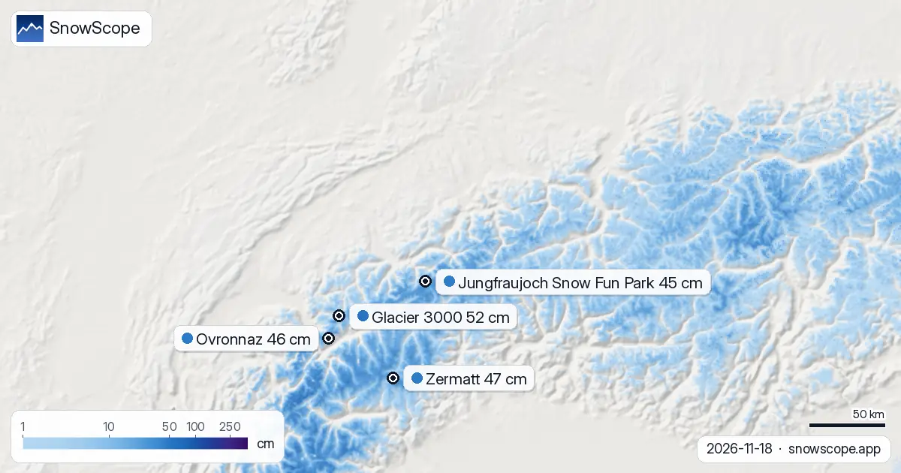

Switzerland: Glacier 3000 leads at nearly double the typical mid-November depth
Glacier 3000 is the snow leader across Switzerland at 52 cm depth, almost twice what we normally see this date. Three of the five main resorts are already well above their typical mid-November levels, with heavy falls moving in over the next week.
See the live snow forecast for Glacier 3000 in the SnowScope appSnow depth, powder alerts and the 3D map, free.
Above normal across the high peaks
The satellite picture shows Swiss ski areas running ahead of their seasonal average. Glacier 3000 sits at 187% of normal for November 18, while Zermatt carries 214 cm at its mid-mountain station (2716 m) — a remarkable 690% of the usual depth. Ovronnaz and Leukerbad are closer to typical, but most high-altitude zones have built their base faster than the past winters suggest.
This early boost is real, not an optical illusion. Our snow model covers 31,030 km2 across Switzerland. As of today, 16,060 km2 are snow-covered, up 1,640 km2 from yesterday. A week ago only 12,550 km2 had snow. The trend is clear: snow is arriving earlier and stacking faster than the November average.
| Resort | Today | Normal for the date | Share of normal |
|---|---|---|---|
| Glacier 3000 | 43 cm | 23 cm | 187 % |
| Zermatt | 214 cm | 31 cm | 690 % |
| Ovronnaz | 27 cm | 19 cm | 142 % |
| Jungfraujoch Snow Fun Park | 59 cm | 71 cm | 83 % |
| Leukerbad (Torrent) | 15 cm | 16 cm | 94 % |

Where the snow sits right now
Snow lies everywhere above 1500 m, where the cover jumps to 93% and depths rise fast. Between 2000 and 2500 m, the mean is 8 cm across the mapped area. Above 2500 m, the average climbs to 21 cm. Below 1500 m remains mostly bare, so early-season skiers and snowboarders must head to the high lifts.
The satellite sees 52% of Switzerland's modelled terrain in white today. That is a solid start. The Valais Alps lead the charge: 116 cm of new snow fell there in the last 72 hours. The Bernese Oberland collected 72 cm in the same window. These numbers come from our model, which estimates snow across mapped regions; they are not measured at a single point.

Ranking the top five resorts today
Glacier 3000 stands highest with 52 cm, followed by Zermatt at 47 cm and Ovronnaz at 46 cm. Jungfraujoch Snow Fun Park holds 45 cm, while Leukerbad sits at 40 cm. All five had fresh snow in the past three days — Glacier 3000 saw 77 cm, Ovronnaz 63 cm, and Jungfraujoch 58 cm. These are estimates for the resort area, calculated from our model; they tell you which zones have the best base, not the exact depth at a single point on the slope.
What is coming in the next seven days
More snow is on the way. Friday, November 19, marks the first day of a heavier pulse. The peak falls on November 20 — our model predicts 39 cm that day. Over the next three days, Glacier 3000 is forecast to gain 96 cm, Ovronnaz 82 cm, and Zermatt 77 cm. Over the full seven days, the country could see up to 128 cm in the wettest zones.
This is a forecast, not a guarantee. Weather patterns shift. But the signal is strong: a wet, slow-moving system will camp over the Alps through the weekend and into early next week. By November 21, the picture will change — we will know far more.
Height bands: where you can ski
The critical line sits at 1500 m. Below it, snow is still scarce — 15% cover and mostly bare ground. From 1500 to 2000 m, cover jumps to 93% but depth is thin at 3 cm; rocks may show through. At 2000 to 2500 m, the base hardens: 8 cm average and 100% cover. Above 2500 m, depths reach 21 cm and cover is complete.
For now, stick to terrain above 2000 m if you are heading out. The coming storms will fill the mid-elevations, but rocks remain a risk on thin slopes below that line.
Three days of change
The trend tells the story. On November 16, Ovronnaz led with 136 cm at its high point, but only 16,510 km2 were snow-covered. By November 17, Zermatt climbed to the top with 47 cm measured that day, but snow-covered area shrank to 14,750 km2 as the model re-ran. Today, Glacier 3000 is the leader at 52 cm, and the covered area has bounced back to 16,060 km2. These swings reflect how our model updates and how fresh snow distributes unevenly across the range. The underlying signal — more snow arriving faster than usual for mid-November — remains solid.
Tips for skiers
- Aim for elevations above 2000 m for now. Snow depth and cover are reliable there; below that, thin coverage and exposed rocks are still the norm.
- Glacier 3000 and the Valais Alps are your best bet today. They hold the deepest base and saw the most fresh snow in the past three days.
- If you are going off-piste, check the latest official avalanche bulletin for your canton and elevation band. New snow on a thin base can slide on steep terrain.
- Friday and Saturday will see the heaviest falls. Expect busy lift lines and variable visibility; plan for shorter runs and safer slopes.
- Watch the forecast update on November 21. The next pulse of snow will shift which resorts lead, and terrain choices will change.
About these numbers
Resort snow depths are the deepest snow on the resort's upper slopes from the SnowScope snow model (about 1 km, run of 18 November); they are estimates for an area, not a measurement at one point. Station values are measurements on the date shown. Forecasts can change. Always read the official avalanche bulletin before going off-piste.
Cite this report
For research, teaching or the press: the numbers and charts are free to reuse under CC BY 4.0 with this citation.
SnowScope (2026), Switzerland: Glacier 3000 leads at nearly double the typical mid-November depth, https://snowscope.app/blog/en/2026/11/switzerland-snow-ahead-of-normal-18-november-2026.html, accessed 2026-11-18
SnowScope (Atlas Labs). (2026, November 18). Switzerland: Glacier 3000 leads at nearly double the typical mid-November depth. SnowScope snow reports. https://snowscope.app/blog/en/2026/11/switzerland-snow-ahead-of-normal-18-november-2026.html
BibTeX
@misc{snowscope2026switzerlandsnowaheadofno,
author = {{SnowScope (Atlas Labs)}},
title = {Switzerland: Glacier 3000 leads at nearly double the typical mid-November depth},
year = {2026},
month = nov,
howpublished = {\url{https://snowscope.app/blog/en/2026/11/switzerland-snow-ahead-of-normal-18-november-2026.html}},
note = {Published 2026-11-18 11:31 UTC; accessed 2026-11-18}
}· CC BY 4.0 · Methods, data and tools →
Glacier 3000: snow and temperature by height, this winter vs last (tools) →
Follow Glacier 3000
Free: a message when fresh snow is coming, and the forecast every morning.
More snow reports

Ski Livigno for 51.50 EUR per day before December 18 when the snow at the top reaches 30cm in 100 % of past winters.

Plan your December 2026 trip to Les Orres by matching weekly pass prices with our snow history of 46 past winters.

Les Karellis offers 45 km of runs and a 6-day adult pass for 191.00 EUR with a 98 % chance of snow mid-mountain in late December.